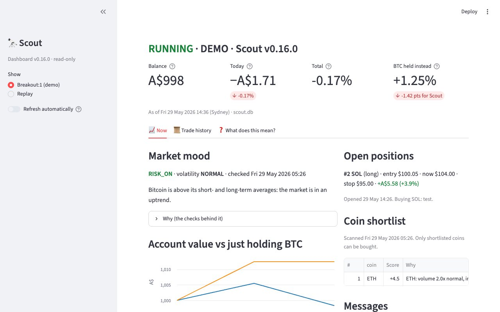

Scout
See market mood, simulated positions and trade history in the real dashboard, using synthetic test data.
Hey, I’m Brandon. Here’s a look at my Mac apps, web experiments, games and the little tools in between.
Explore projectsA Python paper-trading bot that scans the market, manages risk and explains why it made each simulated trade.

See market mood, simulated positions and trade history in the real dashboard, using synthetic test data.
Move between planets in the launcher’s browser preview using the same arrow controls as the TV remote.
Browse the sample app list and watch the dot-matrix home screen change colour as the selection moves.